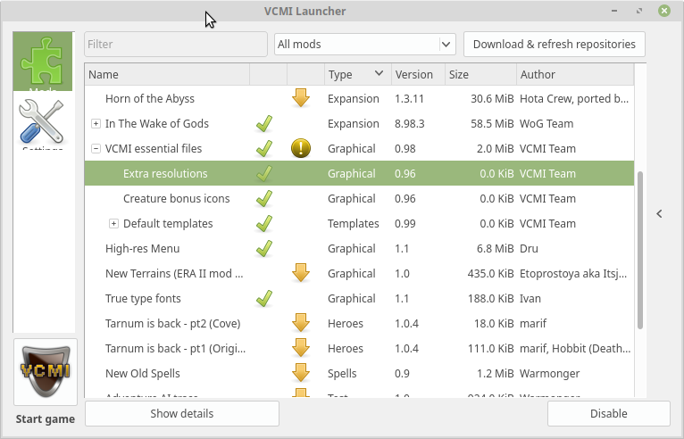
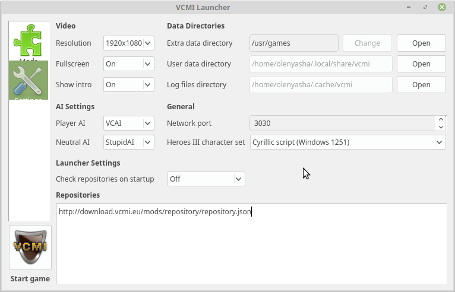

Установка порта Heroes of Might and Magic 3 на linux Mint

Жена давно хотела поиграть в Heroes of Migth and Magic III (далее HOMM3), так как играла в это много лет назад и третьи герои вызывают её ностальгические чувства. Я знаю, что есть порт под linux, но на retropie мне его собрать так и не удалось - были проблемы с зависимостями и версиями библиотек, лишь впустую потратил несколько часов времени. Но не так давно я поставил под телевизор новый китайский неттоп и накатил на него последний минт, как раз для того, чтобы не было проблем со всякой мультимедией, так как в отличие от дебиана, построенного из минимального chroot, там множество вещей работает из коробки. Да и не за чем мучать любимого человека, тайловый i3 и консоль ей не нужны.
Оказалось, что VCMI уже есть в репозитории и его даже не нужно собирать, нужно лишь настроить. Я перепробовал несколько разных сборок и образов HOMM3, (есть купленная копия в GOG, но она английская, а хотелось русскую версию), поэтому сразу расскажу о рабочем варианте с руссификацией и работой в нативных разрешениях экрана.
Первым делом устанавливаем пакеты:
sudo apt-get install mdf2iso ffmpeg vcmi unrar-nonfree
За образами идём сюда. И качаем два архива, после чего кладём их в какую-нибудь директорию, у меня это была ~/opt/homm3.
media:~/opt/homm3$ ls
Heroes_Of_Might_and_Magic_3_Complete_CD1.rar
Heroes_Of_Might_and_Magic_3_Complete_CD2.rar
Распаковываем архивы и убираем всё лишнее:
unrar-nonfree x -y Heroes_Of_Might_and_Magic_3_Complete_CD1.rar; unrar-nonfree x -y Heroes_Of_Might_and_Magic_3_Complete_CD2.rar
rm *.rar *.mds *.nfo
Конвертируем mdf в iso и опять убираем лишнее:
mdf2iso Heroes\ of\ Might\ and\ Magic\ III\ -\ Complete\ -\ CD\ 1.mdf homm3-1.iso; mdf2iso Heroes\ of\ Might\ and\ Magic\ III\ -\ Complete\ -\ CD\ 2.mdf homm3-2.iso
rm *.mdf
Теперь содержимое исошников нужно положить в две директории. Тут есть несоклько вариантов. Если это минт или убунта, то скорее всего вы можете подключить ISO образ обычным даблкликом в Thunar. Если у вас есть права рута или доступ к sudo, можно монтировать образы через mount -o loop filename.iso /path/to/mount. Либо можно воспользоваться утилитой isomaster, есть и ещё масса софта, который позволит это сделать. Одним словом, содержимое первого диска мы копируем в директорию, скажем, ~/opt/homm/cd1, второго - в ~/opt/homm/cd2. Далее запускаем в консоли следующую команду:
vcmibuilder --cd1 ~/opt/homm/cd1/ --cd2 ~/opt/homm/cd2/ --convertMP3
По окончанию работы всё необходимое содержимое будет сконвертировано в нужные форматы и расположено в необходимой структуре директорий в ~/.local/share/vcmi, поэтому исходные iso образы можно будет отмонтировать и удалить, если они вам более не нужны. С этого момента игру можно запустить, но будут проблемы с локализацией и с разрешением - игра будет работать исключительно в 800x600, что бы вы ни ставили в настройках. Подтягивание репозиториев модов в vcmilauncher работает неверно, по крайней мере на моей версии. Чтобы решить проблемы с разрешением, необходимо для начала узнать версию VCMI.
media:~$ dpkg -l | grep vcmi
ii vcmi 0.99+dfsg-2build1 amd64 Rewrite of the Heroes of Might and Magic 3 game engine
В моём случае это версия 0.99. Теперь проходим по этой ссылке и ищем файл вида vcmi_099.rar, скачиваем его. Внутри архива нужно будет взять директорию Mods/vcmi и положить её в ~/.local/share/vcmi/Mods/. После этого запускаем vcmilauncher, жмём на кнопку Download & refresh repositories, после чего устанавливаем следующие моды:
- VCMI essential files/Extra resolutions
- True type fonts
- High-res Menu
- In The Wake of Gods (полностью)

Кнопка Install появляется в правом нижнем углу при выделении мода.
Теперь в меню слева выбираем настройки, выставляем нужное нам разрешение, указываем, нужно ли запускать игру в полноэкранном режиме, нужно ли каждый раз проигрывать intro и в Heroes III character set выставляем Cyrillic script (Windows 1251).

Всё готово, можно жать Start game. Ниже пара кликабельных скриншотов.
Надо сказать, что и в этой версии руссификацию назвать полной нельзя, тем не менее, вполне играбельно. Всем доброй ночи.
Теги: linux, games, ностальгия